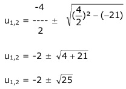

Aufgabe 155 7x + 4 = 21 * 7-x 21 7x + 4 = ---- |*7x 7x 7x * 7x + 4 * 7x = 21 7x+x + 4 * 7x = 21 72x + 4 * 7x = 21 |-21 72x + 4 * 7x - 21 = 0 Lösung durch Substitution: 7x = u --> 72x = u2 u2 + 4u - 21 = 0 p = 4 ; q = -21  u1,2 = -2 ± 5 u1 = -2 + 5 = 3 u2 = -2 - 5 = -7 Rücksubstituieren: 7x = 3 Gleichung logarithmieren: lg7x = lg3 x * lg7 = lg3 :lg7 lg3 0,4771 x1 = ------ = --------- = 0,56 lg7 0,8451 7x = -7 Gleichung logarithmieren. lg7x = lg-7 Keine Lösung, der Logarithmus einer negativen Zahl existiert nicht. L = {0,56}